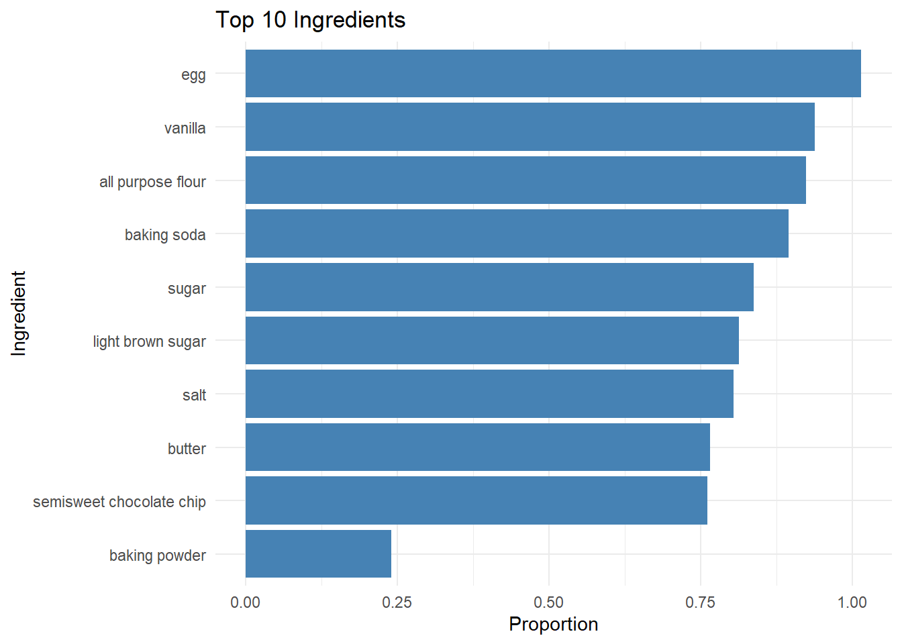

First, read in the CSV data of cookie ingredients. Make sure that your end-result data has appropriate types for each column - these should match the types provided in the documentation in the README.md file.
# Load the dataset from the CSV filecookies1 <-read.csv("choc_chip_cookie_ingredients.csv")# Display the structure of the datasetstr(cookies1)
'data.frame': 1990 obs. of 7 variables:
$ X : int 1 2 3 4 5 6 7 8 9 10 ...
$ Ingredient : chr "all purpose flour" "all purpose flour" "all purpose flour" "all purpose flour" ...
$ Text : chr "3.0 cups all purpose flour" "2.8000000000000003 cups all purpose flour" "1.1076923076923078 cups all purpose flour" "3.333333333333333 cups sifted all purpose flour" ...
$ Recipe_Index: chr "AR_1" "AR_10" "AR_101" "AR_102" ...
$ Rating : num 0.921 0.905 0.6 0.938 0.881 ...
$ Quantity : num 3 2.8 1.11 3.33 2 ...
$ Unit : chr "cup" "cup" "cup" "cup" ...
import pandas as pd# Load the dataset from the CSV filecookies2 = pd.read_csv("choc_chip_cookie_ingredients.csv")# Display the data types of each columnprint(cookies2.dtypes)
Unnamed: 0 int64
Ingredient object
Text object
Recipe_Index object
Rating float64
Quantity float64
Unit object
dtype: object
Exploratory Data Analysis
Exploratory data analysis is the process of getting familiar with your dataset. To get started, this blog post provides a nice checklist to get you thinking:
What question(s) are you trying to solve (or prove wrong)?
What kind of data do you have and how do you treat different types?
What’s missing from the data and how do you deal with it?
Where are the outliers and why should you care about them?
How can you add, change or remove features to get more out of your data?
Generating Questions
Generate at least 5 questions you might explore using this database of cookie ingredients.
Which ingredients are used most frequently across all cookie recipes?
Are there ingredient combinations that commonly appear together?
Is there a correlation between ‘Quantity’ and ‘Rating’?
What is the most common measurement unit?
Does the variety of ingredients affect the rating?
Skimming the Data
One thing we often want to do during EDA is to examine the quality of the data - are there missing values? What quirks might exist in the dataset?
The skimr package in R, and the similar skimpy package in python (which has a much better name, in my opinion), can help provide visual summaries of the data.
Install both packages, and read the package documentation (R, Python).
[Part 1] Use each package and generate summaries of your data that require the use of at least some non-default options in each package’s skim function.
library(skimr)library(dplyr)
Attaching package: 'dplyr'
The following objects are masked from 'package:stats':
filter, lag
The following objects are masked from 'package:base':
intersect, setdiff, setequal, union
# Summarize only character columns and display detailed statisticscookies1 %>%skim() %>%yank("character")
Variable type: character
skim_variable
n_missing
complete_rate
min
max
empty
n_unique
whitespace
Ingredient
0
1
3
26
0
68
0
Text
0
1
7
252
0
1273
0
Recipe_Index
0
1
4
8
0
209
0
Unit
0
1
3
10
0
5
0
from skimpy import skim# Summarize statistics specifically for the numeric columnscookies_py = skim(cookies2[['Rating', 'Quantity']])
[Part 2] Write 1-2 sentences about what you can tell from each summary display you generate. Did you discover anything new about the data?
I discovered that the dataset’s descriptive parts, such as Ingredient, Unit, and Text, are perfectly intact with zero missing values. In contrast, the Rating and Quantity columns show many missing entries, indicating that while we have a full list of ingredients, we lack complete performance metrics for over half of the recipes.
Generating Tables
Another useful technique for exploratory data analysis is to generate summary tables. You may want to use the dplyr package in R (group_by or count functions), as well as the groupby and count methods in Pandas. Python example, R example
[Part 1] Using R and Python, generate a table that shows what proportion of recipes contain each type of ingredient, for the most common 20 ingredients.
# Calculate the total number of unique recipestotal_recipes_r <- cookies1 %>%summarise(n_distinct(Recipe_Index)) %>%pull()# Identify the top 20 ingredients and calculate their proportionstop_20_r <- cookies1 %>%count(Ingredient, sort =TRUE) %>%slice_head(n =20) %>%mutate(proportion = n / total_recipes_r)# Display the proportion tableprint(top_20_r)
# Calculate the total number of unique recipestotal_recipes_py = cookies2['Recipe_Index'].nunique()# Identify the top 20 ingredientstop_20_py = ( cookies2['Ingredient'] .value_counts() .head(20) .reset_index())# Rename these two labelstop_20_py.columns = ['Ingredient', 'count']# Calculate the proportionstop_20_py['proportion'] = top_20_py['count'] / total_recipes_py# Display the proportion tableprint(top_20_py)
[Part 2] Print out a character string that lists all of the ingredients that do not appear in at least 20 recipes.
# Count the number of each ingredientall_ingredient_counts <- cookies1 %>%count(Ingredient)# Filter for ingredients appearing in fewer than 20 recipesrare_ingredients_r <- all_ingredient_counts %>%filter(n <20)# Format the rare ingredients as a single comma-separated stringrare_ingredients_list_r <- rare_ingredients_r %>%pull(Ingredient) %>%paste(collapse =", ")
The ingredients that appear in fewer than 20 recipes are:almond extract, almonds, applesauce, bittersweet chocolate chip, bourbon, bread flour, brown rice flour, cake flour, cake mix, chocolate raisin, cinnamon, coconut, coconut extract, cookie mix, coriander, corn syrup, cornstarch, cream, crispy rice, dark brown sugar, dark chocolate chip, espresso, flour, graham cracker, honey, instant coffee, lemon juice, liquer, macadmia, maple, margarine, marshmallows, milk, molasses, nestle, nutmeg, nuts, oat, peanut butter, peanut butter chips, pecan, pudding mix, raisins, sour cream, tartar, toffee, vegetable oil, vinegar, water, wheat, wheat flour, white chocolate chip, white pepper, xanthan gum, zucchini
# Count the number of each ingredientingredient_counts = cookies2['Ingredient'].value_counts()# Filter for ingredients appearing in fewer than 20 recipesrare_ingredients_py = ingredient_counts[ingredient_counts <20].index.tolist()# Convert the list into a single comma-separated stringrare_string_py =", ".join(rare_ingredients_py)# Display the rare ingredients stringprint("The ingredients that appear in fewer than 20 recipes are:", rare_string_py)
The ingredients that appear in fewer than 20 recipes are: dark brown sugar, oat, bittersweet chocolate chip, milk, pecan, margarine, dark chocolate chip, nuts, white chocolate chip, bread flour, cornstarch, cake flour, pudding mix, vegetable oil, cinnamon, almond extract, water, tartar, vinegar, wheat flour, cake mix, crispy rice, almonds, toffee, maple, coconut, corn syrup, liquer, peanut butter, sour cream, nutmeg, honey, applesauce, brown rice flour, coconut extract, cookie mix, cream, coriander, bourbon, molasses, chocolate raisin, marshmallows, macadmia, flour, graham cracker, instant coffee, lemon juice, espresso, raisins, nestle, peanut butter chips, xanthan gum, white pepper, wheat, zucchini
Visualization
Using whatever plotting system you are comfortable with in R or python, see if you can create a couple of useful exploratory data visualizations which address one of the questions you wrote above - or another question which you’ve come up with as you’ve worked on this assignment.
[Part 1] Create at least one plot (it doesn’t have to be pretty) that showcases an interesting facet of the data.
library(ggplot2)# Pull the top 10 most common ingredientstop_10_r <- top_20_r %>%slice_head(n =10)# Build a horizontal bar chart of ingredient proportionsggplot(top_10_r, aes(x =reorder(Ingredient, proportion), y = proportion)) +geom_col(fill ="steelblue") +coord_flip() +labs(title ="Top 10 Ingredients", x ="Ingredient", y ="Proportion") +theme_minimal()

[Part 2] Write 2-3 sentences about what you can learn from that plot and what directions you might want to investigate from here.
There is an interesting observation that the proportion of egg exceed 1, which seems like an error. Upon closer inspection, I find the egg category includes sub-ingredients like yolks or whites. Consequently, this leads to a total count that surpasses the number of recipes.